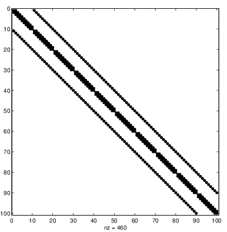
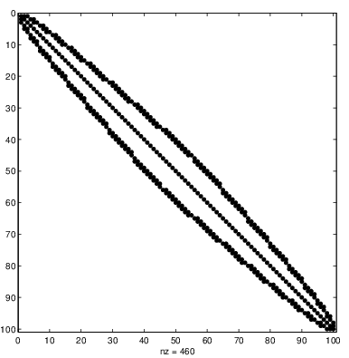
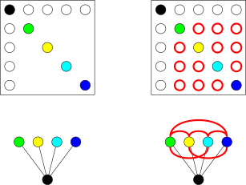
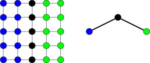

Applications of Parallel Computers
Sparse direct methods
Prof David Bindel
Please click the play button below.
Reminder: Sparsity and reordering
Permute unknowns for better SpMV or
Stability of Gauss elimination,
Fill reduction in Gaussian elimination,
Improved performance of preconditioners...
Let’s start not with Gaussian elimination, but with reordering of the equations and unknowns in a linear system. This is a necessary part of a number of sparse linear algebra problems, whether to achieve better stability for Gaussian elimination (as in partial pivoting), to reduce the cost of Gaussian elimination (as we’ll discuss shortly), or to improve the performance of various preconditioners.
Reminder: Sparsity and partitioning
Want to partition sparse graphs so that
Subgraphs are same size (load balance)
Cut size is minimal (minimize communication)
Matrices that are “almost” diagonal are good?
When we think about reordering operations, we almost invariably think about the graphs that are associated with the matrices. We’re thinking about square matrices, so we have the same number of rows and columns. The idea is that for each row or column, we have a node in the graph; and we include an edge from node i to node j whenever A_ij is nonzero. For today, we’ll deal with the (structurally) nonsymmetric case, which gives us undirected graphs.
Closely related to the problem of reordering is the problem of partitioning a graph into blocks that are about the same size, but with few edges between them. Then we can assign those blocks to different processors, and have minimal communication between processors for either matrix multiplication or (ideally) for Gaussian elimination. The simplest version of this is reordering matrices to be almost diagonal, a structure that is good for both sparse matrix-vector products and for Gaussian elimination.
Reordering for bandedness
 
Reverse Cuthill-McKee
Select “peripheral” vertex \(v\)
Order according to breadth first search from \(v\)
Reverse ordering
One way to try to order unknowns to make things as narrowly banded as possible is to order by (reverse) breadth-first search from a peripheral vertex. This is known in this business as reverse Cuthill-McKee ordering.
The plots at the top show the nonzero pattern for the five-point stencil discretization of the Laplacian on a grid. This is sometimes called a spy plot: the idea is that each dot is a nonzero, and blank space corresponds to zero elements. The first plot is in “natural” (i.e. column major) order. Each row associated with an interior point has five nonzeros: the diagonal and the first super- and subdiagonals (corresponding to the up and down neighbors), and two nonzeros further out that correspond to the left and right neighbors. The second plot is the reordered version using reverse Cuthill-McKee. As you can see, the maximum bandwidth is about the same either way, but reverse Cuthill-McKeee gives us a narrower bandwidth at the top and bottom.
From iterative to direct
RCM ordering is great for SpMV
But isn’t narrow banding good for solvers, too?
LU takes \(O(nb^2)\) where \(b\) is bandwidth.
Great if there’s an ordering where \(b\) is small!
Reverse Cuthill-McKee ordering is good for matrix-vector multiply, but it is also great for direct factorization. In particular, the LAPACK banded matrix solvers take O(nb^2) time – rather than O(n^3) time – to compute the factorization of a band matrix with bandwidth b.
This is great if we’ve got a narrowly banded matrix, but what if that’s not the case? And in the previous slide, we saw that reverse Cuthill-McKee ordering makes the matrix “more narrowly banded” in some average sense, but it does not do much for the maximum bandwidth. So what can we do with this type of “lumpy” band structure?
Skylines and profiles
Profile solvers generalize band solversSkyline storage for lower triangle: for each row \(i\) ,
Start and end of storage for nonzeros in row.
Contiguous nonzero list up to main diagonal.
In each column, first nonzero defines a profile.
All fill-in confined to profile.
RCM is again a good ordering.
The LAPACK solvers only deal with a fixed bandwidth, but it turns out that there is a not-so-different class of solvers called profile solvers that deal with matrices where the bandwidth varies. In this case, we typically store both the original matrix and the factors in skyline storage format, which is a generalization of the band format: in skyline format, we keep a count of the number of nonzeros per row (of the lower triangle, say, in the symmetric case), and then store those nonzeros in a contiguous block of memory. It turns out that unless we do pivoting, which is not needed in the symmetric positive definite case, all the fill-in gets confined to the profile.
Beyond bandedness
Minimum bandwidth for 2D model problem? 3D?
Skyline only gets us so much farther
Even with a reordering like reverse Cuthill-McKee, it’s hard to get away from the fact that we only get so far with banded structure. For a 2D or 3D block, the minimum of the max bandwidth scales like n or n^2, respectively, where n is the number of mesh points per side. In particular, the complexity of a band solver in 2D or 3D looks worse than the time for un-preconditioned CG to reduce the error by a constant factor.
All those back-of-the-envelope estimates are in the vanilla band solver case. Profile solvers with skyline storage will get us a little farther, but not so much.
Beyond bandedness
But more general solvers have similar structure
Ordering (minimize fill)
Symbolic factorization (where will fill be?)
Numerical factorization (pivoting?)
... and triangular solves
So we don’t want to stop with band solvers. But it turns out that more general sparse direct solvers involve a similar set of ingredients. First, we want to reorder the matrix in order to minimize the number of nonzeros that will appear in our factorization, just like we try to minimize the area under the skyline before running a profile solver. Then we want to figure out where the nonzeros in the factors will appear, so we can allocate storage appropriately – trivial in the skyline case, not so trivial more generally. Then we need to actually do the factorization, though maybe we’re rightfully worried that we ought to pivot for stability in the general case. And, finally, to solve linear systems we’ll end up doing some triangular solves with the computed factors, and the complexity of those triangular solves is directly proportional to the number of nonzeros in the triangular factors.
All right, this is pretty abstract. Let’s make the picture concrete with a couple of examples.
Troublesome Trees

One step of Gaussian elimination completely fills this matrix!
First, let’s consider an “arrow” matrix with the nonzero pattern shown here. What happens if we do one step of Gaussian elimination? The trailing submatrix – the Schur complement – fills in completely! This looks like bad news.
We can actually think about the fill in terms of a graph operation: when we eliminate a variable, we remove it from consideration and add edges between all of its neighbors. In this case, removing the root yields a residual graph in which we have to add connections between all the leaves.
Terrific Trees
Full Gaussian elimination generates no fill in this matrix!
Now let’s consider looking at the same problem, but just ordering the unknowns differently, working from the leaves up to the root in order to get a “downward pointing” arrow. What happens when we run elimination on this matrix? Try walking through the algorithm by hand! You will find that we don’t have to deal with any nonzeros that lie outside the nonzero structure of the original matrix – that is, there are no “fill” elements.
Again, we can see the lack of fill in terms of the residual graph operation we described a moment ago. When we get rid of the first leaf — the green one — we have to connect all its neighbors to each other. But the only neighbor is the root, so we get no new edges! And something similar happens for eliminating all the other leaves, until the root is the last thing left.
Graphic Elimination
Consider first steps of GE
A(2:end,1) = A(2:end,1)/A(1,1);
A(2:end,2:end) = A(2:end,2:end)-...
A(2:end,1)*A(1,2:end);Nonzero in the outer product at \((i,j)\) if A(i,1) and A(j,1) both nonzero — that is, if \(i\) and \(j\) are both connected to 1.
General: Eliminate variable, connect remaining neighbors.
Let’s try to connect the Gaussian elimination picture and the residual graph picture a little more carefully. Suppose A is symmetric, and we do one step of Gaussian elimination. What happens in the Schur complement? The only entries that are modified are those where A(i,1) and A(j,1) are both nonzero; that is, entries corresponding to nodes that share node 1 as a mutual neighbor in the original graph.
Terrific Trees Redux
Order leaves to root \(\implies\) \(i\) , parent of \(i\) is only remaining neighbor.
With this residual graph picture in our head, we can see (with some thinking) that for a matrix whose graph is a tree, an elimination order that moves from the leaves up — e.g., using something like a post-order traversal — generates no fill. Moreover, if we wanted to find opportunities for parallelism, we might note that we can deal with disjoint subtrees on different processors, and only need to communicate as we get close to the root.
Of course, you might object that tree-structured matrices seem like they’d be pretty rare in practice, and you’d be right. Fortunately, there are lots of interesting matrices that look a little like trees when we take off our glasses.
Nested Dissection

Idea: Think of block tree structures.
Eliminate block trees from bottom up.
Can recursively partition at leaves.
What do I mean when I say that lots of graphs look like trees when we take off my glasses? Well, a less colloquiual way of putting it is to say that it is OK not to have a tree-structured matrix if we can reorder in such a way that a blocked version of the matrix is structured like a tree. For example, consider this five-by-five mesh, which has the great advantage that it fits on a single slide. If we reorder the blue nodes first, then the green nodes, and then the black nodes, the resulting matrix has a block arrow structure, with the corresponding graph shown on the right. And while we can see fill within these blocks, we will not see any fill outside of the block structure.
Of course, one of the key techniques in computer science is divide and conquer. So if we can partition the matrix into a block form that in a way that tells us how to do elimination well, we want to keep applying the idea to do partitioning within blocks until we eventually run out of steam. This idea of recursively partitioning a graph in order to get a deep tree-like structure is called nested dissection.
Nested Dissection
Rough cost estimate: how much just to factor dense Schur complements associated with separators?
Notice graph partitioning appears again!
And again we want small separators!
It turns out that when we do nested dissection, the cost is largely dominated by the time to solve dense Schur complement systems on each of the separators. That is, in our five-by-five mesh example, after we get rid of all the blue and green unknowns, we will be left with a fully dense trailing submatrix for the black unknowns (all five of them), which we would solve by ordinary dense factorization. More generally, top separator for an n-by-n mesh is size n, and factoring the resulting dense matrix is O(n^3) time (or N^(1.5)). And it turns out that this captures the asymptotic complexity of the algorithm overall.
You might notice in all this that the key to our complexity result is the existence of small separators that partition the graph at various levels. So graph partitioning appears again! This idea of having small separators is not unique to Gaussian elimination by the way; it shows up in other graph algorithms, too. Those of you who have taken an algorithms class where treewidth is discussed might recognize our argument as saying that the treewidth for our n-by-n mesh graph is just n.
As an aside: you might notice also that the top-level separator factorization is O(n^3), but it’s going to be a pretty efficient O(n^3) – this is all level 3 BLAS stuff. So while the asymptotic complexity of a sparse direct solve with nested dissection on our model problem is no better than the asymptotic complexity of unpreconditioned CG on the same problem, there’s a big difference in the constants, and you’re generally better off using the sparse direct solver (or using a good preconditioner for CG).
In comparison, band LU for this matrix would take O(n^4) (or N^2) time.
Nested Dissection
Model problem: Laplacian with 5 point stencil (for 2D)
ND gives optimal complexity in exact arithmetic
2D: \(O(N \log N)\) memory, \(O(N^{3/2})\) flops
3D: \(O(N^{4/3})\) memory, \(O(N^2)\) flops
It turns out that this nested dissection strategy is asymptotically optimal for our model problem, and for a wide set of related problems coming from local discretization of elliptic PDEs by finite elements or finite differences. In 2D, the cost is O(N^1.5); in 3D, the cost is O(N^2). The more prohibitive cost is the memory cost, though; in particular, solving a big 3D problem with a sparse direct method is likely to run you out of memory on lots of machines!
When I say that this is an optimal complexity algorithm, I mean that it’s optimal complexity for solving the problem exactly in exact arithmetic, looking only at the graph structure. But there’s some wiggle room in that statement. Those dense separator factorizations that I described in the previous slide have a lot of structure to them; in fact, for problems like the model problem, these separator problems tend to look a lot like discretizations of boundary integral equations. These discretizations have the property that interactions between nodes that are far away from each other are “smooth” in a way that lends itself to compression. From a linear algebra perspective, we get nearly low-rank submatrices in these separator subproblems, and that’s enough to get very good — though not exact — solvers for the separator problems in sub-cubic time. There has been a lot of work over the past decade on “super-fast” nested dissection and related algorithms based on these ideas.
Minimum Degree
Locally greedy strategy
Want to minimize upper bound on fill-in
Fill \(\leq\) (degree in remaining graph)\(^2\)
At each step
Eliminate vertex with smallest degree
Update degrees of neighbors
Problem: Expensive to implement!
But better varients via quotient graphs
Variants often used in practice
Nested dissection seems reasonable if we are given a matrix that comes from a regular mesh. But what about more general sparse matrices? We can still try to use nested dissection as a strategy, but there are other possible options for getting low-fill orderings, too. One of the more popular ones is minimum degree ordering, which is a greedy strategy that essentially says that we should eliminate the minimal-degree vertex in our residual graph at each step. Approximate minimum degree algorithms and variants are often used in practice — this is the default that you get when you use the sparse LU solver in MATLAB, for example.
Elimination Tree
Variables (columns) are nodes in trees
\(j\) a descendant of \(k\) if eliminating \(j\) updates \(k\) Can eliminate disjoint subtrees in parallel!
As we briefly mentioned before, for a tree-structured matrix, we can eliminate disjoint subtrees in parallel. We get a generalization of this approach with elimination trees, where the idea is that j is a descendant of k if eliminating j updates k in the Schur complement. And whether the tree comes from nested dissection or we’ve used some other ordering, we can always eliminate disjoint subtrees in parallel.
Cache locality
Basic idea: exploit “supernodal” (dense) structures in factor
e.g. arising from elimination of separator Schur complements in ND
Other alternatives exist (multifrontal solvers)
Of course, we also care about getting good cache locality during elimination. One possible organization for cache locality is the so-called “supernodal” approach, which organizes the factorization around columns of L or U that have very similar sparsity patterns (and so can be stored together in a compressed dense format). The other major organizational pattern is called the multifrontal approach.
Do I really want you to understand supernodal and multifrontal approaches in detail? Not really. I mostly want to get across that these methods have a lot of level 3 BLAS work internally, and so they make pretty efficient use of modern processors.
Pivoting
Pivoting is painful, particularly in distributed memory!
Cholesky — no need to pivot!
Threshold pivoting — pivot when things look dangerous
Static pivoting — try to decide up front
What if things go wrong with threshold/static pivoting?
So far, I’ve been talking about unpivoted elimination. For symmetric and positive definite matrices like those from our model problem, there is no need to pivot. But not every matrix is symmetric and positive definite, and so we sometimes want to pivot for numerical stability. That said, pivoting is so painful for sparse Gaussian elimination — particularly in a distributed memory setting — that we might well decide to try to maintain our desired order as much as possible even if we have to give up a little numerical stability. For example, we might only pivot when things start to look really bad (known as threshold pivoting), or we might try to pick a good pivot order statically and just fudge things a bit if it turns out to be terrible. Either way, we’d typically try to recover the stability by using the factorization not on its own, but as a part of an iterative refinement scheme or a flexible Krylov method.
Direct to iterative
Can improve solution by iterative refinement : \[\begin{aligned}
PAQ &\approx LU \\
x_0 &\approx Q U^{-1} L^{-1} Pb \\
r_0 &= b-Ax_0 \\
x_1 &\approx x_0 + Q U^{-1} L^{-1} P r_0
\end{aligned}
\] Looks like approximate Newton on \(F(x) = Ax-b = 0\) .
I actually talk about this idea of iterative refinement when I teach matrix computations, coming at it from the other direction: there, I analyze the refinement algorithm and hand-wave at why iterative refinement might be useful for HPC, and here I tell you why it’s useful for HPC without telling you the analysis!
The basic picture is the same either way. Start with an approximate factorization — this is the expensive part. Then solve the problem approximately using the triangular factors; compute a residual accurately; and do another approximate solve with the residual in order to get a correction. Wash, rinse, and repeat (though we don’t have to repeat too much if we have a good factorization).
Variations on a theme
If we’re willing to sacrifice some on factorization,
Single precision factor + double precision refinement?
Sloppy factorizations (marginal stability) + refinement?
Modify \(m\) small pivots as they’re encountered (low rank updates), fix with \(m\) steps of a Krylov solver?
Suffice it to say, though, this type of iterative refinement scheme is a great idea whenever you’ve got a sloppy solver of some sort. That might mean that you’re dealing with some sloppiness because you didn’t pivot properly, or it might mean that you’ve computed a factorization in single precision when you really wanted double precision accuracy.
Parting advice
Sparse direct for 2D problems
Gets more expensive for 3D problems
Approximate direct solves make good preconditioners
Let me wrap up the discussion of sparse linear algebra with a bit of advice. Unless you want to be an expert in the area, you probably don’t want to build your own sparse direct solvers. But there are good options out there of sparse direct codes that other people have written. You might be able to find iterations that are more asymptotically efficient than these direct solvers for 2D problems, but asymptotics aren’t everything — the constants for the sparse direct solvers are pretty good, because of their reliance on level 3 BLAS.
For 3D, the picture is more complicated. Direct solvers are hard to beat for robustness, and that’s nothing to sneer at — commercial finite element vendors still default to sparse direct solvers, because they basically just work even on hard problems, and without a user having to learn how to massage preconditioned iterative methods into working well. But if you can figure out a good preconditioning strategy, the advantage generally goes to preconditioned iterative methods. Even there, though, it’s worth having a sparse direct solver in your toolkit in order to compute approximate factorizations as a preconditioner, or to compute submatrix factorizations for a block Jacobi or Schwarz scheme, or to do the coarse-grid solves in a multigrid scheme.
In the words of that immortal numerical analyst, Shrek: solvers are like onions! They have layers!
OK, and with that final joke — which is perhaps funny only to me — I think it’s time to wrap this up.